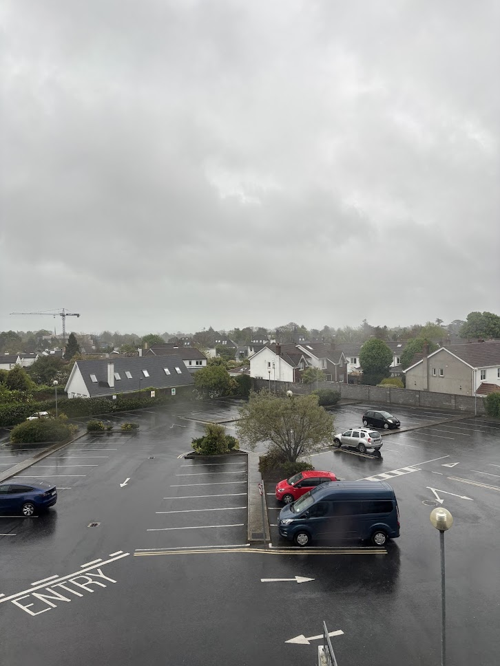

Keynoting DjangoCon EU
Dublin
I landed in Dublin the day before the conference. It rained all afternoon. I went to the nearest gas station to grab something quick and thought I’d head to the city, but after a few minutes outside, I was completely soaked, water literally dripping off me. I gave up and stayed in the hotel.

The rest of the week was much better! No rain, just lively evenings and packed pubs. What I love about Dublin is how it feels cosy yet alive, with people spilling out of pubs, laughing and chatting late into the night.
Guinness
The first time I tried Guinness was years ago in Bratislava. We were wandering around with old colleagues, and the only open place after midnight was a shabby pub filled with old men shouting at football players on a TV. They served maybe three kinds of beer. A colleague told me to try Guinness. Worst. Beer. Of. My. Life. And I’ve tried many. (Not exactly proud of that.)
I tried a few in Dublin, and they were completely different! Very creamy and tasty. Apparently, they use nitrogen instead of CO₂ in Ireland, and that’s why they taste so different.
Whenever I was out, I mostly drank Guinness. Even now, I’m writing this post while sipping my last pint at the airport. Definitely leaving on a high note.
DjangoCon
My Keynote Talk
One day, I got an email invitation from Mariusz Felisiak to give a keynote talk at DjangoCon. Since it’s my favorite community conference and I love giving talks, I couldn’t say no!
So I started thinking about the topic. I wanted something technical but also fun and engaging. One night, lying in bed, the idea hit me: bizarre software bugs! The weird ones, the tragic ones, the funny ones. Bugs that teach something and entertain. Perfect keynote material!
Working on the talk was so much fun! I’ve always loved the arts (and even have some formal education in it), and I really enjoy how public speaking brings together technical research, storytelling, visuals, and performance all in one.
Some examples were space-themed, and I love reading more about spacecraft or planes, like NASA’s Mars Climate Orbiter crash or the Boeing Max disaster (hint: yes, it was software!).
During the preparation, I learned many fascinating things. For example, do you know why planes don’t have square windows? If you don’t, check it out!
Speakers’ Dinner
The night before the conference, we had the speakers’ dinner at a classic Irish pub. They were serving burgers only, but luckily there was a veggie option for me.

After dinner, we went to a nearby pub for a pint of Guinness. Paolo took a photo of me around 9 pm, and you can clearly see how exhausted I looked the night before my talk.
The Talk Day
I fell asleep at 3 am and woke up at 6. I went to the auditorium expecting maybe ten people to show up, since it was 9 am after all. To my biggest surprise, the room was so packed that people were standing, with no empty seats left!
I thought a few of my slides might be funny, but the audience laughed and followed my stories the whole way. It felt amazing!
Afterwards, many folks came up and shared more bizarre bug stories with me. Might have to do a second part next year! Big thanks to everyone for sharing your stories with me!
Other Talks
Haki Benita
I loved Haki Benita’s talk. He spent half an hour talking about foreign keys only.
Turns out I’d read his articles on Django and concurrency before and hadn’t even made the connection. He used to work as a DBA and brings a super unique angle to his talks, especially things Django sometimes does less efficiently.
Once the video is out, I want to go through it step by step and take notes, as there were so many practical takeaways. Highly recommend!
Sarah Boyce
Sarah, one of the Django Fellows, gave a keynote on contributing to Django through code reviews.
I like doing reviews and usually do them before sleep (weird, I know), so it made me think about getting more involved with open source. A lot of projects don’t lack PRs. They lack reviewers. PRs pile up and reviewing is often the bottleneck.
Karen Jex
Karen always gives great talks! This year, she asked for ideas on what to cover, and I suggested “how databases work under the hood.” She opened her talk with a slide quoting me!
Loved her talk! I’ve read Designing Data-Intensive Applications and PostgreSQL Internals, but still learned something new. If you’re into databases, don’t miss her talk once it’s out!
Swimming in the Ocean
After day one of sprints, there’s a tradition: swim in the ocean. I totally forgot about it. I didn’t have any swimwear, towel, or anything with me.
I went with Thibaud and Tom who did go in, and standing there watching them made me want to join. I walked into the ocean up to my knees. It was so cold that my legs went instantly numb. Which is good, because then you don’t feel the pain.
Next year, I’m bringing swimwear and going in for the full challenge!
Django’s Birthdays
Did you know Django turns 20 this year? On July 14, the same day EuroPython starts!
Thibaud made these adorable DIY photo frames and stickers, including a Django pony wearing the EuroPython Society logo. Super cute!
The Django Software Foundation will have a booth at EuroPython again this year, alongside EPS. I can’t wait to see what fun stuff they bring!
Summary
- DjangoCon EU 2025 was one of the best conference experiences I’ve had!
- Guinness has officially earned its place as my second favorite beer (first is still sour ale!).
- Preparing and giving my keynote was so much fun!
- Next DjangoCon, I’m packing swimwear!
Thank You, Organizers!
As a fellow community organizer, I want to thank the organizers for the time and effort they put into making this event happen!